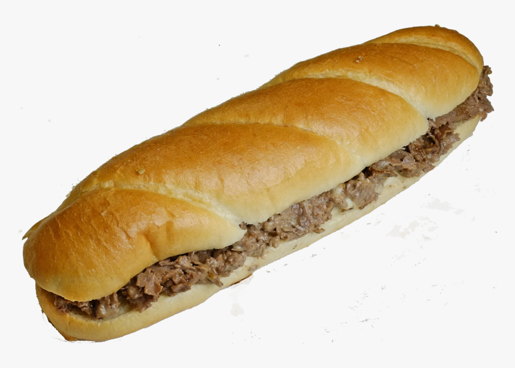

Home
Cheese Steak

How to Make a Philly Cheesesteak?
If you can’t get to Philadelphia easily to pick up a cheesesteak sandwich, then your next best shot is to make it at home! The layout of the sandwich is simple (steak, onions, bell peppers, cheese, and bread), but the details are important. Here are a few key things to consider when making your sandwich:
- You want your steak to be thinly sliced. If
possible, you can have your butcher shave it for you. At home, you can stick the steak in the freezer for 10 minutes to make it really stiff and then shave it with your sharpest knife. Trim off any large pieces of fat, but some fat is good.
- The original cheesesteak can be ordered with only steak or with steak and onions (“wit” is the ordering lingo there). Personally, I like onions and bell peppers, so I do both. You can make it your own since you are making it at home!
- The onions and peppers need to cook much longer than the steak so cook them first, separately and then combine everything together with the cheese to finish the dish.